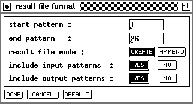

A result file contains the activations of all output units. These
activations are obtained by performing one pass of forward
propagation. After pressing the  button a popup window
lets the user select which patterns are to be tested and which
patterns are to be saved in addition to the test output.
Picture
button a popup window
lets the user select which patterns are to be tested and which
patterns are to be saved in addition to the test output.
Picture  shows that popup window. Since the result
file has no meaning for the loaded network a load operation is not
useful and therefore not supported.
shows that popup window. Since the result
file has no meaning for the loaded network a load operation is not
useful and therefore not supported.